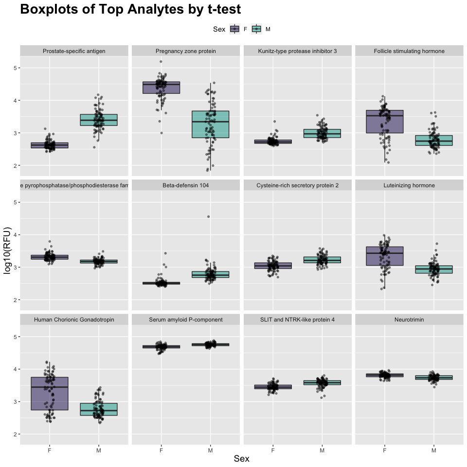
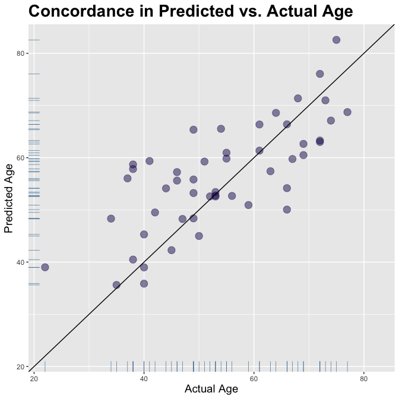

Overview
This document accompanies the R package SomaDataIO, which loads the SomaLogic Operating Co., Inc. proprietary data file called an *.adat. The package provides auxiliary functions for extracting relevant information from the ADAT object once in the R environment. Basic familiarity with the R environment is assumed, as is the ability to install contributed packages from the Comprehensive R Archive Network (CRAN).
If you run into any issues/problems with SomaDataIO full documentation of the most recent release can be found at our pkgdown website hosted by GitHub. If the issue persists we encourage you to consult the issues page and, if appropriate, submit an issue and/or feature request.
Usage
The SomaDataIO package is licensed under the MIT license and is intended solely for research use only (“RUO”) purposes. The code contained herein may not be used for diagnostic, clinical, therapeutic, or other commercial purposes.
Installation
The easiest way to install SomaDataIO is to install directly from GitHub:
devtools::install_github("SomaLogic/SomaDataIO")which installs the most current “development” version from the repository HEAD. To install the most recent release, use:
devtools::install_github("SomaLogic/SomaDataIO@*release")To install a specific tagged release, use:
devtools::install_github("SomaLogic/SomaDataIO@v5.0.0")Alternatively you may clone the repository and install manually:
git clone https://github.com/SomaLogic/SomaDataIO.git SomaDataIO
R CMD INSTALL --use-vanilla --resave-data SomaDataIOPackage Dependencies
The SomaDataIO package was intentionally developed to run slightly behind the bleeding edge of The Comprehensive R Archive Network (CRAN). This allows lead time to identify and fix bugs as well as simplifying software life-cycle. This may change in the future, however for the time being, the dependencies below represent the environment in which SomaDataIO was developed. If you run into any unexpected behavior, please ensure that the following package dependencies are pre-installed:
R (>= 4.1.0)cli (v2.5.0)crayon (v1.4.1)dplyr (v1.0.6)lifecycle (v1.0.0)magrittr (v2.0.1)readxl (v1.3.1)tibble (v3.1.2)tidyr (v1.1.3)usethis (v2.0.1)
Biobase
The Biobase package is suggested, being required by only two functions, pivotExpressionSet() and adat2eSet(). Biobase must be installed separately from Bioconductor by entering the following from the R console:
if (!requireNamespace("BiocManager", quietly = TRUE)) {
install.packages("BiocManager")
}
BiocManager::install("Biobase", version = remotes::bioc_version())Information about Bioconductor can be found here: https://bioconductor.org/install/
Loading
Upon successful installation, load the SomaDataIO as normal:
library(SomaDataIO)For an index of available commands:
library(help = SomaDataIO)Internal Objects
The SomaDataIO package comes with 4 internal objects available to users to run canned examples (or analyses). They can be accessed once SomaDataIO has been attached via library(). They are:
example_dataex_analytesex_anno_tblex_target_names- See
?SomaDataObjects
Main Features (I/O)
- Loading data (Import)
- parse and import a
*.adattext file into anRsession as asoma_adatobject.
- parse and import a
- Wrangling data (manipulation)
- Exporting data (Output)
- write out a
soma_adatobject as a*.adattext file.
- write out a
Loading an ADAT
# Sample file name
f <- system.file("example", "example_data.adat", package = "SomaDataIO", mustWork = TRUE)
my_adat <- read_adat(f)
is.soma_adat(my_adat)
#> [1] TRUE
# S3 print method forwards -> tibble
my_adat
#> ══ SomaScan Data ════════════════════════════════════════════════════════════════════════════════════
#> Attributes intact ✓
#> Rows 192
#> Columns 5318
#> Clinical Data 34
#> Features 5284
#> ── Column Meta ──────────────────────────────────────────────────────────────────────────────────────
#> ℹ SeqId, SeqIdVersion, SomaId, TargetFullName, Target, UniProt, EntrezGeneID, EntrezGeneSymbol,
#> ℹ Organism, Units, Type, Dilution, PlateScale_Reference, CalReference, Cal_Example_Adat_Set001,
#> ℹ ColCheck, CalQcRatio_Example_Adat_Set001_170255, QcReference_170255, Cal_Example_Adat_Set002,
#> ℹ CalQcRatio_Example_Adat_Set002_170255, Dilution2
#> ── Tibble ───────────────────────────────────────────────────────────────────────────────────────────
#> # A tibble: 192 × 5,319
#> row_names PlateId PlateRunDate ScannerID PlatePosition SlideId Subarray SampleId SampleType
#> <chr> <chr> <chr> <chr> <chr> <dbl> <dbl> <chr> <chr>
#> 1 258495800012_3 Example … 2020-06-18 SG152144… H9 2.58e11 3 1 Sample
#> 2 258495800004_7 Example … 2020-06-18 SG152144… H8 2.58e11 7 2 Sample
#> 3 258495800010_8 Example … 2020-06-18 SG152144… H7 2.58e11 8 3 Sample
#> 4 258495800003_4 Example … 2020-06-18 SG152144… H6 2.58e11 4 4 Sample
#> 5 258495800009_4 Example … 2020-06-18 SG152144… H5 2.58e11 4 5 Sample
#> 6 258495800012_8 Example … 2020-06-18 SG152144… H4 2.58e11 8 6 Sample
#> 7 258495800001_3 Example … 2020-06-18 SG152144… H3 2.58e11 3 7 Sample
#> 8 258495800004_8 Example … 2020-06-18 SG152144… H2 2.58e11 8 8 Sample
#> 9 258495800001_8 Example … 2020-06-18 SG152144… H12 2.58e11 8 9 Sample
#> 10 258495800004_3 Example … 2020-06-18 SG152144… H11 2.58e11 3 170261 Calibrator
#> # … with 182 more rows, and 5,310 more variables: PercentDilution <int>, SampleMatrix <chr>,
#> # Barcode <lgl>, Barcode2d <lgl>, SampleName <lgl>, SampleNotes <lgl>, AliquotingNotes <lgl>,
#> # SampleDescription <chr>, AssayNotes <lgl>, TimePoint <lgl>, ExtIdentifier <lgl>, SsfExtId <lgl>,
#> # SampleGroup <lgl>, SiteId <lgl>, TubeUniqueID <lgl>, …
#> ═════════════════════════════════════════════════════════════════════════════════════════════════════
print(my_adat, show_header = TRUE) # if simply wish to see Header info
#> ══ SomaScan Data ════════════════════════════════════════════════════════════════════════════════════
#> Attributes intact ✓
#> Rows 192
#> Columns 5318
#> Clinical Data 34
#> Features 5284
#> ── Column Meta ──────────────────────────────────────────────────────────────────────────────────────
#> ℹ SeqId, SeqIdVersion, SomaId, TargetFullName, Target, UniProt, EntrezGeneID, EntrezGeneSymbol,
#> ℹ Organism, Units, Type, Dilution, PlateScale_Reference, CalReference, Cal_Example_Adat_Set001,
#> ℹ ColCheck, CalQcRatio_Example_Adat_Set001_170255, QcReference_170255, Cal_Example_Adat_Set002,
#> ℹ CalQcRatio_Example_Adat_Set002_170255, Dilution2
#> ── Header Data ──────────────────────────────────────────────────────────────────────────────────────
#> # A tibble: 35 × 2
#> Key Value
#> <chr> <chr>
#> 1 AdatId GID-1234-56-789-abcdef
#> 2 Version 1.2
#> 3 AssayType PharmaServices
#> 4 AssayVersion V4
#> 5 AssayRobot Fluent 1 L-307
#> 6 Legal Experiment details and data have been processed to protect Personally Identi…
#> 7 CreatedBy PharmaServices
#> 8 CreatedDate 2020-07-24
#> 9 EnteredBy Technician1
#> 10 ExpDate 2020-06-18, 2020-07-20
#> 11 GeneratedBy Px (Build: : ), Canopy_0.1.1
#> 12 RunNotes 2 columns ('Age' and 'Sex') have been added to this ADAT. Age has been rando…
#> 13 ProcessSteps Raw RFU, Hyb Normalization, medNormInt (SampleId), plateScale, Calibration, …
#> 14 ProteinEffectiveDate 2019-08-06
#> 15 StudyMatrix EDTA Plasma
#> # … with 20 more rows
#> ═════════════════════════════════════════════════════════════════════════════════════════════════════
# S3 summary method
# View Target and summary statistics
seqs <- tail(names(my_adat), 3)
summary(my_adat[, seqs])
#> seq.9995.6 seq.9997.12 seq.9999.1
#> Target : DUT Target : UBXN4 Target : IRF6
#> Min : 81.9 Min : 28.1 Min : 36.7
#> 1Q : 1637.0 1Q : 10172.4 1Q : 1395.2
#> Median : 4425.3 Median : 23352.8 Median : 2576.6
#> Mean : 5512.7 Mean : 25230.0 Mean : 2966.0
#> 3Q : 8452.8 3Q : 39643.7 3Q : 4280.5
#> Max : 26905.6 Max : 63583.3 Max : 8480.1
#> sd : 4484.2 sd : 16463.8 sd : 1869.7
#> MAD : 4537.9 MAD : 20865.2 MAD : 2041.0
#> IQR : 6815.8 IQR : 29471.2 IQR : 2885.2
# Summarize by Sex
my_adat[, seqs] %>%
split(my_adat$Sex) %>%
lapply(summary)
#> $F
#> seq.9995.6 seq.9997.12 seq.9999.1
#> Target : DUT Target : UBXN4 Target : IRF6
#> Min : 1130 Min : 5353 Min : 889.8
#> 1Q : 2114 1Q : 12830 1Q : 1652.1
#> Median : 6466 Median : 32204 Median : 3264.7
#> Mean : 6306 Mean : 29141 Mean : 3333.2
#> 3Q : 8763 3Q : 42488 3Q : 4366.0
#> Max : 26906 Max : 63583 Max : 7801.8
#> sd : 4537 sd : 15693 sd : 1780.5
#> MAD : 4834 MAD : 20822 MAD : 2183.0
#> IQR : 6649 IQR : 29658 IQR : 2713.9
#>
#> $M
#> seq.9995.6 seq.9997.12 seq.9999.1
#> Target : DUT Target : UBXN4 Target : IRF6
#> Min : 1121 Min : 5206 Min : 853.9
#> 1Q : 2282 1Q : 12492 1Q : 1703.1
#> Median : 4902 Median : 24027 Median : 2872.5
#> Mean : 5922 Mean : 26936 Mean : 3189.8
#> 3Q : 8325 3Q : 38187 3Q : 4423.1
#> Max : 21190 Max : 60322 Max : 8480.1
#> sd : 4316 sd : 15065 sd : 1784.2
#> MAD : 4538 MAD : 19345 MAD : 1996.9
#> IQR : 6043 IQR : 25695 IQR : 2720.0Wrangling
Attributes Contain File and Feature Information
names(attributes(my_adat))
#> [1] "names" "class" "row.names" "Header.Meta" "Col.Meta" "file_specs" "row_meta"
# The `Col.Meta` attribute contains
# target annotation information
attr(my_adat, "Col.Meta")
#> # A tibble: 5,284 × 21
#> SeqId SeqIdVersion SomaId TargetFullName Target UniProt EntrezGeneID EntrezGeneSymbol Organism
#> <chr> <dbl> <chr> <chr> <chr> <chr> <chr> <chr> <chr>
#> 1 10000-28 3 SL019… Beta-crystall… CRBB2 P43320 "1415" "CRYBB2" Human
#> 2 10001-7 3 SL002… RAF proto-onc… c-Raf P04049 "5894" "RAF1" Human
#> 3 10003-15 3 SL019… Zinc finger p… ZNF41 P51814 "7592" "ZNF41" Human
#> 4 10006-25 3 SL019… ETS domain-co… ELK1 P19419 "2002" "ELK1" Human
#> 5 10008-43 3 SL019… Guanylyl cycl… GUC1A P43080 "2978" "GUCA1A" Human
#> 6 10011-65 3 SL019… Inositol poly… OCRL Q01968 "4952" "OCRL" Human
#> 7 10012-5 3 SL014… SAM pointed d… SPDEF O95238 "25803" "SPDEF" Human
#> 8 10013-34 3 SL025… Fc_MOUSE Fc_MO… Q99LC4 "" "" Mouse
#> 9 10014-31 3 SL007… Zinc finger p… SLUG O43623 "6591" "SNAI2" Human
#> 10 10015-119 3 SL014… Voltage-gated… KCAB2 Q13303 "8514" "KCNAB2" Human
#> # … with 5,274 more rows, and 12 more variables: Units <chr>, Type <chr>, Dilution <chr>,
#> # PlateScale_Reference <dbl>, CalReference <dbl>, Cal_Example_Adat_Set001 <dbl>, ColCheck <chr>,
#> # CalQcRatio_Example_Adat_Set001_170255 <dbl>, QcReference_170255 <dbl>,
#> # Cal_Example_Adat_Set002 <dbl>, CalQcRatio_Example_Adat_Set002_170255 <dbl>, Dilution2 <dbl>Analyte Features (seq.xxxx.xx)
getAnalytes(my_adat) %>% head(20) # first 20 analytes; see AptName above
#> [1] "seq.10000.28" "seq.10001.7" "seq.10003.15" "seq.10006.25" "seq.10008.43" "seq.10011.65"
#> [7] "seq.10012.5" "seq.10013.34" "seq.10014.31" "seq.10015.119" "seq.10021.1" "seq.10022.207"
#> [13] "seq.10023.32" "seq.10024.44" "seq.10030.8" "seq.10034.16" "seq.10035.6" "seq.10036.201"
#> [19] "seq.10037.98" "seq.10040.63"
getAnalytes(my_adat) %>% length() # how many analytes
#> [1] 5284
getAnalytes(my_adat, n = TRUE) # the `n` argument; no. analytes
#> [1] 5284Feature Data
The getAnalyteInfo() function creates a lookup table that links analyte feature names in the soma_adat object to the annotation data in ?Col.Meta via the common index-key, AptName, in column 1:
getAnalyteInfo(my_adat)
#> # A tibble: 5,284 × 22
#> AptName SeqId SeqIdVersion SomaId TargetFullName Target UniProt EntrezGeneID EntrezGeneSymbol
#> <chr> <chr> <dbl> <chr> <chr> <chr> <chr> <chr> <chr>
#> 1 seq.10000.28 1000… 3 SL019… Beta-crystall… CRBB2 P43320 "1415" "CRYBB2"
#> 2 seq.10001.7 1000… 3 SL002… RAF proto-onc… c-Raf P04049 "5894" "RAF1"
#> 3 seq.10003.15 1000… 3 SL019… Zinc finger p… ZNF41 P51814 "7592" "ZNF41"
#> 4 seq.10006.25 1000… 3 SL019… ETS domain-co… ELK1 P19419 "2002" "ELK1"
#> 5 seq.10008.43 1000… 3 SL019… Guanylyl cycl… GUC1A P43080 "2978" "GUCA1A"
#> 6 seq.10011.65 1001… 3 SL019… Inositol poly… OCRL Q01968 "4952" "OCRL"
#> 7 seq.10012.5 1001… 3 SL014… SAM pointed d… SPDEF O95238 "25803" "SPDEF"
#> 8 seq.10013.34 1001… 3 SL025… Fc_MOUSE Fc_MO… Q99LC4 "" ""
#> 9 seq.10014.31 1001… 3 SL007… Zinc finger p… SLUG O43623 "6591" "SNAI2"
#> 10 seq.10015.1… 1001… 3 SL014… Voltage-gated… KCAB2 Q13303 "8514" "KCNAB2"
#> # … with 5,274 more rows, and 13 more variables: Organism <chr>, Units <chr>, Type <chr>,
#> # Dilution <chr>, PlateScale_Reference <dbl>, CalReference <dbl>, Cal_Example_Adat_Set001 <dbl>,
#> # ColCheck <chr>, CalQcRatio_Example_Adat_Set001_170255 <dbl>, QcReference_170255 <dbl>,
#> # Cal_Example_Adat_Set002 <dbl>, CalQcRatio_Example_Adat_Set002_170255 <dbl>, Dilution2 <dbl>See ?colmeta or ?annotations for further details about these fields.
Clinical Data
getMeta(my_adat) # clinical meta data for each sample
#> [1] "PlateId" "PlateRunDate" "ScannerID"
#> [4] "PlatePosition" "SlideId" "Subarray"
#> [7] "SampleId" "SampleType" "PercentDilution"
#> [10] "SampleMatrix" "Barcode" "Barcode2d"
#> [13] "SampleName" "SampleNotes" "AliquotingNotes"
#> [16] "SampleDescription" "AssayNotes" "TimePoint"
#> [19] "ExtIdentifier" "SsfExtId" "SampleGroup"
#> [22] "SiteId" "TubeUniqueID" "CLI"
#> [25] "HybControlNormScale" "RowCheck" "NormScale_20"
#> [28] "NormScale_0_005" "NormScale_0_5" "ANMLFractionUsed_20"
#> [31] "ANMLFractionUsed_0_005" "ANMLFractionUsed_0_5" "Age"
#> [34] "Sex"
getMeta(my_adat, n = TRUE) # also an `n` argument
#> [1] 34Group Generics
You may perform basic mathematical transformations on the feature data only with special soma_adat S3 methods (see ?groupGenerics):
head(my_adat$seq.2429.27)
#> [1] 8642.3 12472.1 14627.7 13579.8 8938.8 6738.8
logData <- log10(my_adat) # a typical log10() transform
head(logData$seq.2429.27)
#> [1] 3.936629 4.095940 4.165176 4.132893 3.951279 3.828583
roundData <- round(my_adat)
head(roundData$seq.2429.27)
#> [1] 8642 12472 14628 13580 8939 6739
sqData <- sqrt(my_adat)
head(sqData$seq.2429.27)
#> [1] 92.96397 111.67856 120.94503 116.53240 94.54523 82.09019
antilog(1:4)
#> [1] 10 100 1000 10000
sum(my_adat < 100) # low signalling values
#> [1] 41721
all.equal(my_adat, sqrt(my_adat^2))
#> [1] TRUE
all.equal(my_adat, antilog(log10(my_adat)))
#> [1] TRUEFull Complement of dplyr S3 Methods
The soma_adat also comes with numerous class specific methods to the most popular dplyr generics that make working with soma_adat objects simpler for those familiar with this standard toolkit:
dim(my_adat)
#> [1] 192 5318
males <- dplyr::filter(my_adat, Sex == "M")
dim(males)
#> [1] 85 5318
males %>%
dplyr::select(SampleType, SampleMatrix, starts_with("NormScale"))
#> ══ SomaScan Data ════════════════════════════════════════════════════════════════════════════════════
#> Attributes intact ✓
#> Rows 85
#> Columns 5
#> Clinical Data 5
#> Features 0
#> ── Column Meta ──────────────────────────────────────────────────────────────────────────────────────
#> ℹ SeqId, SeqIdVersion, SomaId, TargetFullName, Target, UniProt, EntrezGeneID, EntrezGeneSymbol,
#> ℹ Organism, Units, Type, Dilution, PlateScale_Reference, CalReference, Cal_Example_Adat_Set001,
#> ℹ ColCheck, CalQcRatio_Example_Adat_Set001_170255, QcReference_170255, Cal_Example_Adat_Set002,
#> ℹ CalQcRatio_Example_Adat_Set002_170255, Dilution2
#> ── Tibble ───────────────────────────────────────────────────────────────────────────────────────────
#> # A tibble: 85 × 6
#> row_names SampleType SampleMatrix NormScale_20 NormScale_0_005 NormScale_0_5
#> <chr> <chr> <chr> <dbl> <dbl> <dbl>
#> 1 258495800010_8 Sample Plasma-PPT 0.984 1.03 0.915
#> 2 258495800003_4 Sample Plasma-PPT 1.08 0.946 0.912
#> 3 258495800001_3 Sample Plasma-PPT 0.921 1.13 0.953
#> 4 258495800012_5 Sample Plasma-PPT 0.861 1.08 0.829
#> 5 258495800006_2 Sample Plasma-PPT 0.874 1.01 0.822
#> 6 258495800011_3 Sample Plasma-PPT 0.928 1.13 0.930
#> 7 258495800003_2 Sample Plasma-PPT 1.12 1.15 0.943
#> 8 258495800005_2 Sample Plasma-PPT 0.884 0.921 0.762
#> 9 258495800008_4 Sample Plasma-PPT 0.991 0.979 0.920
#> 10 258495800006_6 Sample Plasma-PPT 0.862 0.964 0.999
#> # … with 75 more rows
#> ═════════════════════════════════════════════════════════════════════════════════════════════════════Available S3 Methods soma_adat
# see full complement of `soma_adat` methods
methods(class = "soma_adat")
#> [1] [ [[ [[<- [<- == $ $<-
#> [8] anti_join arrange count filter full_join getAnalytes getMeta
#> [15] group_by inner_join is_seqFormat left_join Math median mutate
#> [22] Ops print rename right_join sample_frac sample_n select
#> [29] semi_join separate slice_sample slice summary Summary transform
#> [36] ungroup unite
#> see '?methods' for accessing help and source codeWriting a soma_adat
is.intact.attributes(my_adat) # attributes MUST be intact to write to file
#> [1] TRUE
write_adat(my_adat, file = tempfile("my-adat-", fileext = ".adat"))
#> ✔ ADAT passed all checks and traps.
#> ✔ ADAT written to: '/var/folders/24/8k48jl6d249_n_qfxwsl6xvm0000gn/T//Rtmpxwy6fk/my-adat-7ee19f25cd2.adat'Typical Analyses
Although it is beyond the scope of the SomaDataIO package, below are 3 sample analyses that typical users/clients would perform on SomaLogic data. They are not intended to be a definitive guide in statistical analysis and existing packages do exist in the R universe that perform parts or extensions of these techniques. Many variations of the workflows below exist, however the framework highlights how one could perform standard preliminary analyses on SomaLogic data for:
- Two-group differential expression (t-test)
- Binary classification (logistic regression)
- Linear regression
Data Preparation
# `example_data` comes with SomaDataIO
dim(example_data)
#> [1] 192 5318
table(example_data$SampleType)
#>
#> Buffer Calibrator QC Sample
#> 6 10 6 170
is_seq <- function(.x) grepl("^seq\\.[0-9]{4}", .x) # regex for analytes
cs <- function(.x) { # center/scale vector
out <- .x - mean(.x) # center
out / sd(out) # scale
}
# Prepare data set for analysis
cleanData <- example_data %>%
filter(SampleType == "Sample") %>% # rm control samples
drop_na(Sex) %>% # rm NAs if present
log10() %>% # log10-transform (Math Generic)
mutate(Group = as.numeric(factor(Sex)) - 1) %>% # map Sex -> 0/1
modify_if(is_seq(names(.)), cs)
table(cleanData$Sex)
#>
#> F M
#> 85 85
table(cleanData$Group) # F = 0; M = 1
#>
#> 0 1
#> 85 85Compare Two Groups (M/F) via t-test
Get annotations via getAnalyteInfo():
t_tests <- getAnalyteInfo(cleanData) %>%
select(AptName, SeqId, Target = TargetFullName, EntrezGeneSymbol, UniProt)
# Feature data info:
# Subset via dplyr::filter(t_tests, ...) here to
# restrict analysis to only certain analytes
t_tests
#> # A tibble: 5,284 × 5
#> AptName SeqId Target EntrezGeneSymbol UniProt
#> <chr> <chr> <chr> <chr> <chr>
#> 1 seq.10000.28 10000-28 Beta-crystallin B2 "CRYBB2" P43320
#> 2 seq.10001.7 10001-7 RAF proto-oncogene serine/threonine-protein kina… "RAF1" P04049
#> 3 seq.10003.15 10003-15 Zinc finger protein 41 "ZNF41" P51814
#> 4 seq.10006.25 10006-25 ETS domain-containing protein Elk-1 "ELK1" P19419
#> 5 seq.10008.43 10008-43 Guanylyl cyclase-activating protein 1 "GUCA1A" P43080
#> 6 seq.10011.65 10011-65 Inositol polyphosphate 5-phosphatase OCRL-1 "OCRL" Q01968
#> 7 seq.10012.5 10012-5 SAM pointed domain-containing Ets transcription … "SPDEF" O95238
#> 8 seq.10013.34 10013-34 Fc_MOUSE "" Q99LC4
#> 9 seq.10014.31 10014-31 Zinc finger protein SNAI2 "SNAI2" O43623
#> 10 seq.10015.119 10015-119 Voltage-gated potassium channel subunit beta-2 "KCNAB2" Q13303
#> # … with 5,274 more rowsCalculate t-tests
Use a “list columns” approach via nested tibble object using dplyr, purrr, and stats::t.test()
t_tests <- t_tests %>%
mutate(
formula = map(AptName, ~ as.formula(paste(.x, "~ Sex"))), # create formula
t_test = map(formula, ~ stats::t.test(.x, data = cleanData)), # fit t-tests
t_stat = map_dbl(t_test, "statistic"), # pull out t-statistic
p.value = map_dbl(t_test, "p.value"), # pull out p-values
fdr = p.adjust(p.value, method = "BH") # FDR for multiple testing
) %>%
arrange(p.value) %>% # re-order by `p-value`
mutate(rank = row_number()) # add numeric ranks
# View analysis tibble
t_tests
#> # A tibble: 5,284 × 11
#> AptName SeqId Target EntrezGeneSymbol UniProt formula t_test t_stat p.value fdr rank
#> <chr> <chr> <chr> <chr> <chr> <list> <list> <dbl> <dbl> <dbl> <int>
#> 1 seq.8468.19 8468… Prost… KLK3 P07288 <formula> <htest> -22.1 2.46e-43 1.30e-39 1
#> 2 seq.6580.29 6580… Pregn… PZP P20742 <formula> <htest> 14.2 3.07e-28 8.12e-25 2
#> 3 seq.7926.13 7926… Kunit… SPINT3 P49223 <formula> <htest> -11.1 6.16e-21 1.08e-17 3
#> 4 seq.3032.11 3032… Folli… CGA FSHB P01215… <formula> <htest> 9.67 4.68e-17 6.18e-14 4
#> 5 seq.16892.… 1689… Ecton… ENPP2 Q13822 <formula> <htest> 9.37 6.45e-17 6.82e-14 5
#> 6 seq.5763.67 5763… Beta-… DEFB104A Q8WTQ1 <formula> <htest> -8.71 9.11e-15 8.02e-12 6
#> 7 seq.9282.12 9282… Cyste… CRISP2 P16562 <formula> <htest> -8.47 1.16e-14 8.74e-12 7
#> 8 seq.2953.31 2953… Lutei… CGA LHB P01215… <formula> <htest> 8.55 2.58e-14 1.71e-11 8
#> 9 seq.4914.10 4914… Human… CGA CGB P01215… <formula> <htest> 8.14 3.99e-13 2.34e-10 9
#> 10 seq.2474.54 2474… Serum… APCS P02743 <formula> <htest> -7.40 1.08e-11 5.72e- 9 10
#> # … with 5,274 more rowsVisualize with ggplot2()
Create a plotting tibble in the “long” format for ggplot2:
target_map <- head(t_tests, 12) %>% # mapping table
select(AptName, Target) # SeqId -> Target
plot_tbl <- example_data %>%
filter(SampleType == "Sample") %>% # rm control samples
drop_na(Sex) %>% # rm NAs if present
log10() %>% # log10-transform for plotting
select(Sex, target_map$AptName) %>% # top 12 analytes
pivot_longer(cols = -Sex, names_to = "AptName", values_to = "RFU") %>%
dplyr::left_join(target_map) %>%
# order factor levels by 't_tests' rank to order plots below
mutate(Target = factor(Target, levels = target_map$Target))
#> Joining, by = "AptName"
plot_tbl
#> # A tibble: 2,040 × 4
#> Sex AptName RFU Target
#> <chr> <chr> <dbl> <fct>
#> 1 F seq.8468.19 2.54 Prostate-specific antigen
#> 2 F seq.6580.29 4.06 Pregnancy zone protein
#> 3 F seq.7926.13 2.66 Kunitz-type protease inhibitor 3
#> 4 F seq.3032.11 3.26 Follicle stimulating hormone
#> 5 F seq.16892.23 3.44 Ectonucleotide pyrophosphatase/phosphodiesterase family member 2
#> 6 F seq.5763.67 2.52 Beta-defensin 104
#> 7 F seq.9282.12 2.94 Cysteine-rich secretory protein 2
#> 8 F seq.2953.31 2.99 Luteinizing hormone
#> 9 F seq.4914.10 3.93 Human Chorionic Gonadotropin
#> 10 F seq.2474.54 4.71 Serum amyloid P-component
#> # … with 2,030 more rows
plot_tbl %>%
ggplot(aes(x = Sex, y = RFU, fill = Sex)) +
geom_boxplot(alpha = 0.5, outlier.shape = NA) +
scale_fill_manual(values = c("#24135F", "#00A499")) +
geom_jitter(shape = 16, width = 0.1, alpha = 0.5) +
facet_wrap(~ Target) +
ggtitle("Boxplots of Top Analytes by t-test") +
labs(y = "log10(RFU)") +
theme(plot.title = element_text(size = 21, face = "bold"),
axis.title.x = element_text(size = 14),
axis.title.y = element_text(size = 14),
legend.position = "top"
)
Logistic Regression
Predict Sex
set.seed(3) # seed resulting in 50/50 class balance
idx <- sample(1:nrow(cleanData), size = nrow(cleanData) - 50) # hold-out
train <- cleanData[idx, ]
test <- cleanData[-idx, ]
# assert no overlap
isTRUE(
all.equal(intersect(rownames(train), rownames(test)), character(0))
)
#> [1] TRUE
LR_tbl <- getAnalyteInfo(train) %>%
select(AptName, SeqId, Target = TargetFullName, EntrezGeneSymbol, UniProt) %>%
mutate(
formula = map(AptName, ~ as.formula(paste("Group ~", .x))), # create formula
model = map(formula, ~ stats::glm(.x, data = train, family = "binomial", model = FALSE)), # fit glm()
beta_hat = map_dbl(model, ~ coef(.x)[2L]), # pull out coef Beta
p.value = map2_dbl(model, AptName, ~ {
summary(.x)$coefficients[.y, "Pr(>|z|)"] }), # pull out p-values
fdr = p.adjust(p.value, method = "BH") # FDR correction multiple testing
) %>%
arrange(p.value) %>% # re-order by `p-value`
mutate(rank = row_number()) # add numeric ranks
LR_tbl
#> # A tibble: 5,284 × 11
#> AptName SeqId Target EntrezGeneSymbol UniProt formula model beta_hat p.value fdr rank
#> <chr> <chr> <chr> <chr> <chr> <list> <lis> <dbl> <dbl> <dbl> <int>
#> 1 seq.6580.29 6580-… Pregn… PZP P20742 <formula> <glm> -3.07 5.09e-9 1.98e-5 1
#> 2 seq.5763.67 5763-… Beta-… DEFB104A Q8WTQ1 <formula> <glm> 3.13 7.50e-9 1.98e-5 2
#> 3 seq.3032.11 3032-… Folli… CGA FSHB P01215… <formula> <glm> -1.64 2.27e-8 3.99e-5 3
#> 4 seq.7926.13 7926-… Kunit… SPINT3 P49223 <formula> <glm> 2.90 3.35e-8 4.42e-5 4
#> 5 seq.2953.31 2953-… Lutei… CGA LHB P01215… <formula> <glm> -1.58 1.22e-7 1.28e-4 5
#> 6 seq.16892.23 16892… Ecton… ENPP2 Q13822 <formula> <glm> -1.89 1.46e-7 1.28e-4 6
#> 7 seq.4914.10 4914-… Human… CGA CGB P01215… <formula> <glm> -1.56 1.75e-7 1.32e-4 7
#> 8 seq.9282.12 9282-… Cyste… CRISP2 P16562 <formula> <glm> 1.91 3.43e-7 2.27e-4 8
#> 9 seq.2474.54 2474-… Serum… APCS P02743 <formula> <glm> 1.79 3.00e-6 1.76e-3 9
#> 10 seq.7139.14 7139-… SLIT … SLITRK4 Q8IW52 <formula> <glm> 1.21 3.86e-6 2.04e-3 10
#> # … with 5,274 more rowsFit Model | Calculate Performance
Next, select features for the model fit. We have a good idea of reasonable Sex markers from prior knowledge (CGA*), and fortunately many of these are highly ranked in LR_tbl. Below we fit a 4-marker logistic regression model from cherry-picked gender-related features:
# AptName is index key between `LR_tbl` and `train`
feats <- LR_tbl$AptName[c(1, 3, 5, 7)]
form <- as.formula(paste("Group ~", paste(feats, collapse = "+")))
fit <- glm(form, data = train, family = "binomial", model = FALSE)
pred <- tibble(
true_class = test$Sex, # orig class label
pred = predict(fit, newdata = test, type = "response"), # prob. 'Male'
pred_class = ifelse(pred < 0.5, "F", "M"), # class label
)
conf <- table(pred$true_class, pred$pred_class, dnn = list("Actual", "Predicted"))
tp <- conf[2, 2]
tn <- conf[1, 1]
fp <- conf[1, 2]
fn <- conf[2, 1]
# Confusion matrix
conf
#> Predicted
#> Actual F M
#> F 24 1
#> M 5 20
# Classification metrics
tibble(Sensitivity = tp / (tp + fn),
Specificity = tn / (tn + fp),
Accuracy = (tp + tn) / sum(conf),
PPV = tp / (tp + fp),
NPV = tn / (tn + fn)
)
#> # A tibble: 1 × 5
#> Sensitivity Specificity Accuracy PPV NPV
#> <dbl> <dbl> <dbl> <dbl> <dbl>
#> 1 0.8 0.96 0.88 0.952 0.828Linear Regression
We use the same cleanData, train, and test data objects from the logistic regression analysis above.
Predict Age
LinR_tbl <- getAnalyteInfo(train) %>% # `train` from above
select(AptName, SeqId, Target = TargetFullName, EntrezGeneSymbol, UniProt) %>%
mutate(
formula = map(AptName, ~ as.formula(paste("Age ~", .x, collapse = " + "))),
model = map(formula, ~ lm(.x, data = train, model = FALSE)), # fit linear models
slope = map_dbl(model, ~ coef(.x)[2L]), # pull out B_1
p.value = map2_dbl(model, AptName, ~ {
summary(.x)$coefficients[.y, "Pr(>|t|)"] }), # pull out p-values
fdr = p.adjust(p.value, method = "BH") # FDR for multiple testing
) %>%
arrange(p.value) %>% # re-order by `p-value`
mutate(rank = row_number()) # add numeric ranks
LinR_tbl
#> # A tibble: 5,284 × 11
#> AptName SeqId Target EntrezGeneSymbol UniProt formula model slope p.value fdr rank
#> <chr> <chr> <chr> <chr> <chr> <list> <lis> <dbl> <dbl> <dbl> <int>
#> 1 seq.3045.72 3045-72 Pleio… PTN P21246 <formula> <lm> 6.70 4.25e-10 2.25e-6 1
#> 2 seq.4496.60 4496-60 Macro… MMP12 P39900 <formula> <lm> 6.31 1.28e- 9 2.58e-6 2
#> 3 seq.15640.54 15640-54 Trans… TAGLN Q01995 <formula> <lm> 6.74 1.46e- 9 2.58e-6 3
#> 4 seq.6392.7 6392-7 WNT1-… WISP2 O76076 <formula> <lm> 6.32 2.84e- 9 3.76e-6 4
#> 5 seq.15386.7 15386-7 Fatty… FABP4 P15090 <formula> <lm> 5.87 6.65e- 9 7.03e-6 5
#> 6 seq.4374.45 4374-45 Growt… GDF15 Q99988 <formula> <lm> 5.95 1.26e- 8 1.11e-5 6
#> 7 seq.2609.59 2609-59 Cysta… CST3 P01034 <formula> <lm> 5.60 3.11e- 8 2.35e-5 7
#> 8 seq.8480.29 8480-29 EGF-c… EFEMP1 Q12805 <formula> <lm> 6.00 1.47e- 7 8.48e-5 8
#> 9 seq.15533.97 15533-97 Macro… MSR1 P21757 <formula> <lm> 5.51 1.50e- 7 8.48e-5 9
#> 10 seq.3362.61 3362-61 Chord… CHRDL1 Q9BU40 <formula> <lm> 5.35 1.86e- 7 8.48e-5 10
#> # … with 5,274 more rowsFit Model | Calculate Performance
Fit an 8-marker model with the top 8 features from LinR_tbl:
feats <- head(LinR_tbl$AptName, 8)
form <- as.formula(paste("Age ~", paste(feats, collapse = "+")))
fit <- lm(form, data = train, model = FALSE)
n <- nrow(test)
p <- length(feats)
# Results
res <- tibble(
true_age = test$Age,
pred_age = predict(fit, newdata = test),
pred_error = pred_age - true_age
)
# Lin's Concordance Correl. Coef.
# Accounts for location + scale shifts
linCCC <- function(x, y) {
stopifnot(length(x) == length(y))
a <- 2 * cor(x, y) * sd(x) * sd(y)
b <- var(x) + var(y) + (mean(x) - mean(y))^2
a / b
}
# Regression metrics
tibble(
rss = sum(res$pred_error^2), # residual sum of squares
tss = sum((test$Age - mean(test$Age))^2), # total sum of squares
rsq = 1 - (rss / tss), # R-squared
rsqadj = max(0, 1 - (1 - rsq) * (n - 1) / (n - p - 1)), # Adjusted R-squared
R2 = stats::cor(res$true_age, res$pred_age)^2, # R-squared Pearson approx.
MAE = mean(abs(res$pred_error)), # Mean Absolute Error
RMSE = sqrt(mean(res$pred_error^2)), # Root Mean Squared Error
CCC = linCCC(res$true_age, res$pred_age) # Lin's CCC
)
#> # A tibble: 1 × 8
#> rss tss rsq rsqadj R2 MAE RMSE CCC
#> <dbl> <dbl> <dbl> <dbl> <dbl> <dbl> <dbl> <dbl>
#> 1 4152. 8492. 0.511 0.416 0.550 7.16 9.11 0.702Visualize Concordance
lims <- range(res$true_age, res$pred_age)
res %>%
ggplot(aes(x = true_age, y = pred_age)) +
geom_point(colour = "#24135F", alpha = 0.5, size = 4) +
expand_limits(x = lims, y = lims) + # make square
geom_abline(slope = 1, colour = "black") + # add unit line
geom_rug(colour = "#286d9b", size = 0.2) +
labs(y = "Predicted Age", x = "Actual Age") +
ggtitle("Concordance in Predicted vs. Actual Age") +
theme(plot.title = element_text(size = 21, face = "bold"),
axis.title.x = element_text(size = 14),
axis.title.y = element_text(size = 14))